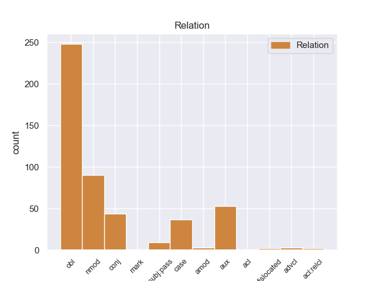
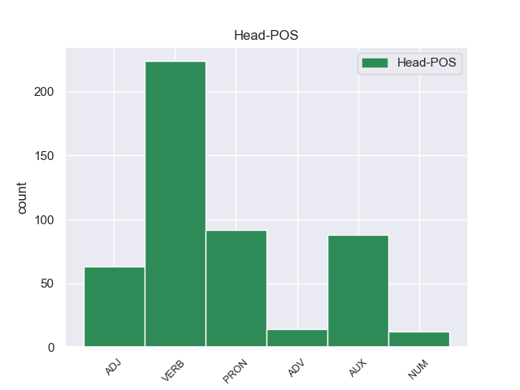
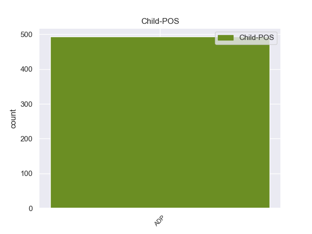

Distribution of features within this leaf



Agreement Rules sorted by frequency.
- When the dependent token is the oblique nominal(obl) of the head token, and the head token is VERB and the dependent token is ADP.
1 चोट _ _ _ _ 0 _ _ _
2 के _ _ _ _ 0 _ _ _
3 कारण _ _ _ _ 0 _ _ _
4 ऑस्ट्रेलिया _ _ _ _ 0 _ _ _
5 के _ _ _ _ 0 _ _ _
6 खिलाफ _ _ _ _ 0 _ _ _
7 टेस्ट _ _ _ _ 0 _ _ _
8 सिरीज़ _ _ _ _ 0 _ _ _
9 के _ _ _ _ 0 _ _ _
10 दो _ _ _ _ 0 _ _ _
11 मैचों _ _ _ _ 0 _ _ _
12 से _ _ _ _ 0 _ _ _
13 बाहर _ _ _ _ 0 _ _ _
14 रहे _ _ _ _ 0 _ _ _
15 सौरव _ _ _ _ 0 _ _ _
16 गांगुली _ _ _ _ 0 _ _ _
17 पाकिस्तान _ _ _ _ 0 _ _ _
18 के के ADP PSP AdpType=Post|Case=Acc|Gender=Masc 25 obl _ ChunkId=NP6|ChunkType=child|Translit=ke
19 खिलाफ़ _ _ _ _ 0 _ _ _
20 १३ _ _ _ _ 0 _ _ _
21 नवंबर _ _ _ _ 0 _ _ _
22 को _ _ _ _ 0 _ _ _
23 कोलकाता _ _ _ _ 0 _ _ _
24 में _ _ _ _ 0 _ _ _
25 होने हो VERB VM Case=Acc|Number=Sing|VerbForm=Inf 0 _ _ _
26 वाले _ _ _ _ 0 _ _ _
27 डे _ _ _ _ 0 _ _ _
28 - _ _ _ _ 0 _ _ _
29 नाइट _ _ _ _ 0 _ _ _
30 मैच _ _ _ _ 0 _ _ _
31 की _ _ _ _ 0 _ _ _
32 कप्तानी _ _ _ _ 0 _ _ _
33 करेंगे _ _ _ _ 0 _ _ _
34 । _ _ _ _ 0 _ _ _
1 इससे _ _ _ _ 0 _ _ _
2 पहले _ _ _ _ 0 _ _ _
3 २६ _ _ _ _ 0 _ _ _
4 अगस्त _ _ _ _ 0 _ _ _
5 को _ _ _ _ 0 _ _ _
6 पोटा _ _ _ _ 0 _ _ _
7 जज _ _ _ _ 0 _ _ _
8 एल. _ _ _ _ 0 _ _ _
9 राजेंद्रन _ _ _ _ 0 _ _ _
10 ने _ _ _ _ 0 _ _ _
11 अभियोजन _ _ _ _ 0 _ _ _
12 पक्ष _ _ _ _ 0 _ _ _
13 की का ADP PSP AdpType=Post|Case=Acc|Gender=Fem|Number=Sing 16 obl _ ChunkId=NP5|ChunkType=child|Translit=kī
14 ओर _ _ _ _ 0 _ _ _
15 से _ _ _ _ 0 _ _ _
16 दायर दायर ADJ JJ Case=Acc 0 _ _ _
17 याचिका _ _ _ _ 0 _ _ _
18 पर _ _ _ _ 0 _ _ _
19 फैसला _ _ _ _ 0 _ _ _
20 सुनाने _ _ _ _ 0 _ _ _
21 की _ _ _ _ 0 _ _ _
22 आज _ _ _ _ 0 _ _ _
23 की _ _ _ _ 0 _ _ _
24 तारीख _ _ _ _ 0 _ _ _
25 तय _ _ _ _ 0 _ _ _
26 की _ _ _ _ 0 _ _ _
27 थी _ _ _ _ 0 _ _ _
28 । _ _ _ _ 0 _ _ _
1 गंगा _ _ _ _ 0 _ _ _
2 में _ _ _ _ 0 _ _ _
3 प्रदूषण _ _ _ _ 0 _ _ _
4 के का ADP PSP AdpType=Post|Case=Nom|Gender=Masc|Number=Plur 5 nmod _ ChunkId=NP2|ChunkType=child|Translit=ke
5 वैसे वैसा PRON PRP Case=Nom|Gender=Masc|Number=Plur|Person=3|PronType=Prs 0 _ _ _
6 बहुत _ _ _ _ 0 _ _ _
7 से _ _ _ _ 0 _ _ _
8 कारण _ _ _ _ 0 _ _ _
9 हैं _ _ _ _ 0 _ _ _
10 पर _ _ _ _ 0 _ _ _
11 सबसे _ _ _ _ 0 _ _ _
12 बड़ी _ _ _ _ 0 _ _ _
13 वजह _ _ _ _ 0 _ _ _
14 इसमें _ _ _ _ 0 _ _ _
15 सीवेज _ _ _ _ 0 _ _ _
16 और _ _ _ _ 0 _ _ _
17 कारखानों _ _ _ _ 0 _ _ _
18 से _ _ _ _ 0 _ _ _
19 निकलने _ _ _ _ 0 _ _ _
20 वाले _ _ _ _ 0 _ _ _
21 अवशिष्ट _ _ _ _ 0 _ _ _
22 का _ _ _ _ 0 _ _ _
23 गिरना _ _ _ _ 0 _ _ _
24 है _ _ _ _ 0 _ _ _
25 । _ _ _ _ 0 _ _ _
1 अगर _ _ _ _ 0 _ _ _
2 तुमने _ _ _ _ 0 _ _ _
3 उलेमा _ _ _ _ 0 _ _ _
4 से _ _ _ _ 0 _ _ _
5 माफी _ _ _ _ 0 _ _ _
6 नहीं _ _ _ _ 0 _ _ _
7 मांगी _ _ _ _ 0 _ _ _
8 तो _ _ _ _ 0 _ _ _
9 इसके _ _ _ _ 0 _ _ _
10 लिए _ _ _ _ 0 _ _ _
11 निर्दोष _ _ _ _ 0 _ _ _
12 लोगों _ _ _ _ 0 _ _ _
13 की _ _ _ _ 0 _ _ _
14 जान _ _ _ _ 0 _ _ _
15 के का ADP PSP AdpType=Post|Case=Acc|Gender=Masc|Number=Sing 16 nmod _ ChunkId=NP6|ChunkType=child|Translit=ke
16 जिम्मेदार जिम्मेदार ADJ JJ Case=Acc 0 _ _ _
17 अमर _ _ _ _ 0 _ _ _
18 उजाला _ _ _ _ 0 _ _ _
19 के _ _ _ _ 0 _ _ _
20 संपादक _ _ _ _ 0 _ _ _
21 होंगे _ _ _ _ 0 _ _ _
22 । _ _ _ _ 0 _ _ _
1 ईस्ट _ _ _ _ 0 _ _ _
2 बंगाल _ _ _ _ 0 _ _ _
3 के _ _ _ _ 0 _ _ _
4 कोच _ _ _ _ 0 _ _ _
5 सुभाष _ _ _ _ 0 _ _ _
6 भौमिक _ _ _ _ 0 _ _ _
7 ने _ _ _ _ 0 _ _ _
8 यहाँ _ _ _ _ 0 _ _ _
9 कहा _ _ _ _ 0 _ _ _
10 कि _ _ _ _ 0 _ _ _
11 वह _ _ _ _ 0 _ _ _
12 इस _ _ _ _ 0 _ _ _
13 घटना _ _ _ _ 0 _ _ _
14 से _ _ _ _ 0 _ _ _
15 बेहद _ _ _ _ 0 _ _ _
16 दुःखी _ _ _ _ 0 _ _ _
17 हैं _ _ _ _ 0 _ _ _
18 और _ _ _ _ 0 _ _ _
19 इस _ _ _ _ 0 _ _ _
20 पर _ _ _ _ 0 _ _ _
21 कुछ _ _ _ _ 0 _ _ _
22 भी _ _ _ _ 0 _ _ _
23 कह _ _ _ _ 0 _ _ _
24 पाने पा AUX VAUX Case=Acc|VerbForm=Inf 0 _ _ _
25 की का ADP PSP AdpType=Post|Case=Acc|Gender=Fem|Number=Sing 24 aux _ ChunkId=VGNN|ChunkType=child|Translit=kī
26 स्थिति _ _ _ _ 0 _ _ _
27 में _ _ _ _ 0 _ _ _
28 नहीं _ _ _ _ 0 _ _ _
29 हैं _ _ _ _ 0 _ _ _
30 । _ _ _ _ 0 _ _ _
1 वामपंथियों _ _ _ _ 0 _ _ _
2 का _ _ _ _ 0 _ _ _
3 कहना _ _ _ _ 0 _ _ _
4 है _ _ _ _ 0 _ _ _
5 कि _ _ _ _ 0 _ _ _
6 ईरान _ _ _ _ 0 _ _ _
7 हमारा _ _ _ _ 0 _ _ _
8 पारंपरिक _ _ _ _ 0 _ _ _
9 मित्र _ _ _ _ 0 _ _ _
10 देश _ _ _ _ 0 _ _ _
11 है _ _ _ _ 0 _ _ _
12 और _ _ _ _ 0 _ _ _
13 मध्य _ _ _ _ 0 _ _ _
14 पूर्व _ _ _ _ 0 _ _ _
15 व _ _ _ _ 0 _ _ _
16 खाड़ी _ _ _ _ 0 _ _ _
17 के _ _ _ _ 0 _ _ _
18 देशों _ _ _ _ 0 _ _ _
19 में _ _ _ _ 0 _ _ _
20 किसी कोई PRON PRP Case=Acc|Number=Sing|Person=3|PronType=Prs 0 _ _ _
21 प्रकार _ _ _ _ 0 _ _ _
22 की का ADP PSP AdpType=Post|Case=Acc|Gender=Fem|Number=Sing 20 case _ ChunkId=NP8|ChunkType=child|Translit=kī
23 क्षेत्रीय _ _ _ _ 0 _ _ _
24 अस्थिरता _ _ _ _ 0 _ _ _
25 का _ _ _ _ 0 _ _ _
26 हमारे _ _ _ _ 0 _ _ _
27 देश _ _ _ _ 0 _ _ _
28 पर _ _ _ _ 0 _ _ _
29 असर _ _ _ _ 0 _ _ _
30 पड़ेगा _ _ _ _ 0 _ _ _
31 । _ _ _ _ 0 _ _ _
1 दरअसल _ _ _ _ 0 _ _ _
2 डाक _ _ _ _ 0 _ _ _
3 विभाग _ _ _ _ 0 _ _ _
4 ने _ _ _ _ 0 _ _ _
5 महाराष्ट्र _ _ _ _ 0 _ _ _
6 के _ _ _ _ 0 _ _ _
7 तीन _ _ _ _ 0 _ _ _
8 बीमा _ _ _ _ 0 _ _ _
9 धारकों _ _ _ _ 0 _ _ _
10 को _ _ _ _ 0 _ _ _
11 यह _ _ _ _ 0 _ _ _
12 कहते _ _ _ _ 0 _ _ _
13 हुए _ _ _ _ 0 _ _ _
14 पूरी _ _ _ _ 0 _ _ _
15 रक़म _ _ _ _ 0 _ _ _
16 लौटाने _ _ _ _ 0 _ _ _
17 से _ _ _ _ 0 _ _ _
18 इनकार _ _ _ _ 0 _ _ _
19 कर _ _ _ _ 0 _ _ _
20 दिया _ _ _ _ 0 _ _ _
21 था _ _ _ _ 0 _ _ _
22 कि _ _ _ _ 0 _ _ _
23 उन _ _ _ _ 0 _ _ _
24 लोगों _ _ _ _ 0 _ _ _
25 ने _ _ _ _ 0 _ _ _
26 पूरी _ _ _ _ 0 _ _ _
27 अवधि _ _ _ _ 0 _ _ _
28 तक _ _ _ _ 0 _ _ _
29 बीमा _ _ _ _ 0 _ _ _
30 की _ _ _ _ 0 _ _ _
31 रक़म _ _ _ _ 0 _ _ _
32 जमा _ _ _ _ 0 _ _ _
33 नहीं _ _ _ _ 0 _ _ _
34 की _ _ _ _ 0 _ _ _
35 और _ _ _ _ 0 _ _ _
36 समय _ _ _ _ 0 _ _ _
37 से _ _ _ _ 0 _ _ _
38 पहले पहले ADP NST AdpType=Post|Case=Nom|Gender=Masc|Number=Sing|Person=3 44 obl _ AltTag=ADP-NOUN|ChunkId=NP11|ChunkType=child|Translit=pahale
39 ही _ _ _ _ 0 _ _ _
40 पॉलिसी _ _ _ _ 0 _ _ _
41 को _ _ _ _ 0 _ _ _
42 बंद _ _ _ _ 0 _ _ _
43 कर _ _ _ _ 0 _ _ _
44 दिया दे AUX VAUX Case=Nom|Gender=Masc|Number=Sing 0 _ _ _
45 । _ _ _ _ 0 _ _ _
1 सोमवार _ _ _ _ 0 _ _ _
2 को _ _ _ _ 0 _ _ _
3 राव _ _ _ _ 0 _ _ _
4 ने _ _ _ _ 0 _ _ _
5 मायावती _ _ _ _ 0 _ _ _
6 से _ _ _ _ 0 _ _ _
7 मुलाकात _ _ _ _ 0 _ _ _
8 की _ _ _ _ 0 _ _ _
9 जिसके _ _ _ _ 0 _ _ _
10 बाद _ _ _ _ 0 _ _ _
11 मायावती _ _ _ _ 0 _ _ _
12 तेलंगाना _ _ _ _ 0 _ _ _
13 मुद्दे _ _ _ _ 0 _ _ _
14 पर _ _ _ _ 0 _ _ _
15 राव _ _ _ _ 0 _ _ _
16 का का ADP PSP AdpType=Post|Case=Nom|Gender=Masc|Number=Sing 17 nmod _ ChunkId=NP8|ChunkType=child|Translit=kā
17 साथ साथ ADV NST AdpType=Post|Case=Nom|Gender=Masc|Number=Sing|Person=3 0 _ _ _
18 देने _ _ _ _ 0 _ _ _
19 को _ _ _ _ 0 _ _ _
20 राजी _ _ _ _ 0 _ _ _
21 हो _ _ _ _ 0 _ _ _
22 गई _ _ _ _ 0 _ _ _
23 हैं _ _ _ _ 0 _ _ _
24 । _ _ _ _ 0 _ _ _
1 कांग्रेस _ _ _ _ 0 _ _ _
2 नेतृत्व _ _ _ _ 0 _ _ _
3 वाली _ _ _ _ 0 _ _ _
4 राज्य _ _ _ _ 0 _ _ _
5 की _ _ _ _ 0 _ _ _
6 गठबंधन _ _ _ _ 0 _ _ _
7 सरकार _ _ _ _ 0 _ _ _
8 में _ _ _ _ 0 _ _ _
9 शामिल _ _ _ _ 0 _ _ _
10 जनता _ _ _ _ 0 _ _ _
11 दल _ _ _ _ 0 _ _ _
12 ( _ _ _ _ 0 _ _ _
13 एस _ _ _ _ 0 _ _ _
14 ) _ _ _ _ 0 _ _ _
15 के _ _ _ _ 0 _ _ _
16 प्रमुख _ _ _ _ 0 _ _ _
17 एवं _ _ _ _ 0 _ _ _
18 पूर्व _ _ _ _ 0 _ _ _
19 प्रधानमंत्री _ _ _ _ 0 _ _ _
20 एच. _ _ _ _ 0 _ _ _
21 डी. _ _ _ _ 0 _ _ _
22 देवगौड़ा _ _ _ _ 0 _ _ _
23 के _ _ _ _ 0 _ _ _
24 पुत्र _ _ _ _ 0 _ _ _
25 एच. _ _ _ _ 0 _ _ _
26 डी. _ _ _ _ 0 _ _ _
27 कुमारस्वामी _ _ _ _ 0 _ _ _
28 ने _ _ _ _ 0 _ _ _
29 पिता _ _ _ _ 0 _ _ _
30 के _ _ _ _ 0 _ _ _
31 खिलाफ _ _ _ _ 0 _ _ _
32 विद्रोह _ _ _ _ 0 _ _ _
33 करते _ _ _ _ 0 _ _ _
34 हुए _ _ _ _ 0 _ _ _
35 पार्टी _ _ _ _ 0 _ _ _
36 के का ADP PSP AdpType=Post|Case=Acc|Gender=Masc|Number=Sing 37 nmod _ ChunkId=NP11|ChunkType=child|Translit=ke
37 ४० ४० NUM QC Case=Acc|NumType=Card 0 _ _ _
38 से _ _ _ _ 0 _ _ _
39 अधिक _ _ _ _ 0 _ _ _
40 विधायकों _ _ _ _ 0 _ _ _
41 के _ _ _ _ 0 _ _ _
42 साथ _ _ _ _ 0 _ _ _
43 सरकार _ _ _ _ 0 _ _ _
44 से _ _ _ _ 0 _ _ _
45 अलग _ _ _ _ 0 _ _ _
46 होने _ _ _ _ 0 _ _ _
47 का _ _ _ _ 0 _ _ _
48 ऐलान _ _ _ _ 0 _ _ _
49 कर _ _ _ _ 0 _ _ _
50 दिया _ _ _ _ 0 _ _ _
51 । _ _ _ _ 0 _ _ _
1 जीएसआई _ _ _ _ 0 _ _ _
2 के _ _ _ _ 0 _ _ _
3 अनुसार _ _ _ _ 0 _ _ _
4 १८८१ _ _ _ _ 0 _ _ _
5 के _ _ _ _ 0 _ _ _
6 पैटर्न _ _ _ _ 0 _ _ _
7 वाले _ _ _ _ 0 _ _ _
8 घटनाक्रम _ _ _ _ 0 _ _ _
9 के का ADP PSP AdpType=Post|Case=Acc|Gender=Masc|Number=Sing 16 nsubj:pass _ ChunkId=NP4|ChunkType=child|Translit=ke
10 ११४ _ _ _ _ 0 _ _ _
11 से _ _ _ _ 0 _ _ _
12 २०० _ _ _ _ 0 _ _ _
13 सालों _ _ _ _ 0 _ _ _
14 में _ _ _ _ 0 _ _ _
15 दोहराए _ _ _ _ 0 _ _ _
16 जाने जा AUX VAUX Case=Acc|VerbForm=Inf 0 _ _ _
17 की _ _ _ _ 0 _ _ _
18 संभावना _ _ _ _ 0 _ _ _
19 है _ _ _ _ 0 _ _ _
20 । _ _ _ _ 0 _ _ _
1 अपने _ _ _ _ 0 _ _ _
2 एक _ _ _ _ 0 _ _ _
3 महीने _ _ _ _ 0 _ _ _
4 के _ _ _ _ 0 _ _ _
5 काम _ _ _ _ 0 _ _ _
6 को _ _ _ _ 0 _ _ _
7 ' _ _ _ _ 0 _ _ _
8 अच्छी _ _ _ _ 0 _ _ _
9 शुरुआत _ _ _ _ 0 _ _ _
10 ' _ _ _ _ 0 _ _ _
11 बताने बता VERB VM Case=Acc|Number=Sing|VerbForm=Inf 0 _ _ _
12 वाले _ _ _ _ 0 _ _ _
13 और _ _ _ _ 0 _ _ _
14 बिहार _ _ _ _ 0 _ _ _
15 में _ _ _ _ 0 _ _ _
16 सुशासन _ _ _ _ 0 _ _ _
17 का _ _ _ _ 0 _ _ _
18 आश्वासन _ _ _ _ 0 _ _ _
19 देने _ _ _ _ 0 _ _ _
20 वाले वाला ADP PSP AdpType=Post|Case=Acc|Gender=Masc|Number=Sing 11 conj _ ChunkId=VGNN2|ChunkType=child|Translit=vāle
21 मुख्यमंत्री _ _ _ _ 0 _ _ _
22 नितीश _ _ _ _ 0 _ _ _
23 कुमार _ _ _ _ 0 _ _ _
24 और _ _ _ _ 0 _ _ _
25 राज्य _ _ _ _ 0 _ _ _
26 भवन _ _ _ _ 0 _ _ _
27 निर्माण _ _ _ _ 0 _ _ _
28 विभाग _ _ _ _ 0 _ _ _
29 ने _ _ _ _ 0 _ _ _
30 एक _ _ _ _ 0 _ _ _
31 अणे _ _ _ _ 0 _ _ _
32 मार्ग _ _ _ _ 0 _ _ _
33 में _ _ _ _ 0 _ _ _
34 एक _ _ _ _ 0 _ _ _
35 आधुनिक _ _ _ _ 0 _ _ _
36 आईटी _ _ _ _ 0 _ _ _
37 सेंटर _ _ _ _ 0 _ _ _
38 बनाने _ _ _ _ 0 _ _ _
39 का _ _ _ _ 0 _ _ _
40 निर्णय _ _ _ _ 0 _ _ _
41 किया _ _ _ _ 0 _ _ _
42 है _ _ _ _ 0 _ _ _
43 । _ _ _ _ 0 _ _ _
1 इस _ _ _ _ 0 _ _ _
2 बारे _ _ _ _ 0 _ _ _
3 में _ _ _ _ 0 _ _ _
4 राज्यसभा _ _ _ _ 0 _ _ _
5 में _ _ _ _ 0 _ _ _
6 एक _ _ _ _ 0 _ _ _
7 प्रश्न _ _ _ _ 0 _ _ _
8 के _ _ _ _ 0 _ _ _
9 जवाब _ _ _ _ 0 _ _ _
10 में _ _ _ _ 0 _ _ _
11 विदेश _ _ _ _ 0 _ _ _
12 मंत्री _ _ _ _ 0 _ _ _
13 नटवर _ _ _ _ 0 _ _ _
14 सिंह _ _ _ _ 0 _ _ _
15 ने _ _ _ _ 0 _ _ _
16 कहा _ _ _ _ 0 _ _ _
17 कि _ _ _ _ 0 _ _ _
18 नेपाल _ _ _ _ 0 _ _ _
19 नरेश _ _ _ _ 0 _ _ _
20 ज्ञानेंद्र _ _ _ _ 0 _ _ _
21 द्वारा _ _ _ _ 0 _ _ _
22 प्रधानमंत्री _ _ _ _ 0 _ _ _
23 मनमोहन _ _ _ _ 0 _ _ _
24 सिंह _ _ _ _ 0 _ _ _
25 व _ _ _ _ 0 _ _ _
26 उन्हें _ _ _ _ 0 _ _ _
27 देश _ _ _ _ 0 _ _ _
28 में _ _ _ _ 0 _ _ _
29 आपातकाल _ _ _ _ 0 _ _ _
30 हटाए _ _ _ _ 0 _ _ _
31 जाने _ _ _ _ 0 _ _ _
32 , _ _ _ _ 0 _ _ _
33 राजनीतिक _ _ _ _ 0 _ _ _
34 कैदियों _ _ _ _ 0 _ _ _
35 के _ _ _ _ 0 _ _ _
36 छोड़े _ _ _ _ 0 _ _ _
37 जाने जा AUX VAUX Case=Acc|VerbForm=Inf 0 _ _ _
38 व _ _ _ _ 0 _ _ _
39 लोकतांत्रिक _ _ _ _ 0 _ _ _
40 प्रक्रिया _ _ _ _ 0 _ _ _
41 जल्द _ _ _ _ 0 _ _ _
42 शुरू _ _ _ _ 0 _ _ _
43 किए _ _ _ _ 0 _ _ _
44 जाने _ _ _ _ 0 _ _ _
45 के का ADP PSP AdpType=Post|Case=Acc|Gender=Masc|Number=Sing 37 conj _ ChunkId=VGNN3|ChunkType=child|Translit=ke
46 आश्वासन _ _ _ _ 0 _ _ _
47 देने _ _ _ _ 0 _ _ _
48 के _ _ _ _ 0 _ _ _
49 बाद _ _ _ _ 0 _ _ _
50 यह _ _ _ _ 0 _ _ _
51 कार्रवाई _ _ _ _ 0 _ _ _
52 करना _ _ _ _ 0 _ _ _
53 खेद _ _ _ _ 0 _ _ _
54 जनक _ _ _ _ 0 _ _ _
55 है _ _ _ _ 0 _ _ _
56 . _ _ _ _ 0 _ _ _
1 लेकिन _ _ _ _ 0 _ _ _
2 धूल _ _ _ _ 0 _ _ _
3 भरी _ _ _ _ 0 _ _ _
4 आंधी _ _ _ _ 0 _ _ _
5 ने _ _ _ _ 0 _ _ _
6 उनकी वह PRON PRP Case=Acc,Gen|Gender=Fem|Number=Plur|Person=3|Poss=Yes|PronType=Prs 0 _ _ _
7 और _ _ _ _ 0 _ _ _
8 शहरवासियों _ _ _ _ 0 _ _ _
9 की का ADP PSP AdpType=Post|Case=Acc,Gen|Gender=Fem|Number=Plur|Poss=Yes 6 conj _ ChunkId=NP4|ChunkType=child|Tam=kA|Translit=kī|Vib=का
10 उम्मीदों _ _ _ _ 0 _ _ _
11 पर _ _ _ _ 0 _ _ _
12 पानी _ _ _ _ 0 _ _ _
13 फेर _ _ _ _ 0 _ _ _
14 दिया _ _ _ _ 0 _ _ _
15 । _ _ _ _ 0 _ _ _
1 हो _ _ _ _ 0 _ _ _
2 सकता _ _ _ _ 0 _ _ _
3 है _ _ _ _ 0 _ _ _
4 कि _ _ _ _ 0 _ _ _
5 वीरप्पन _ _ _ _ 0 _ _ _
6 की _ _ _ _ 0 _ _ _
7 मदद _ _ _ _ 0 _ _ _
8 करने _ _ _ _ 0 _ _ _
9 वाले वाला ADP PSP AdpType=Post|Case=Nom|Gender=Masc|Number=Plur 10 amod _ ChunkId=VGNN|ChunkType=child|Translit=vāle
10 कुछ कुछ PRON PRP Case=Nom|Person=3|PronType=Prs 0 _ _ _
11 बाकी _ _ _ _ 0 _ _ _
12 रह _ _ _ _ 0 _ _ _
13 गए _ _ _ _ 0 _ _ _
14 हों _ _ _ _ 0 _ _ _
15 । _ _ _ _ 0 _ _ _
1 यह _ _ _ _ 0 _ _ _
2 राज्य _ _ _ _ 0 _ _ _
3 में _ _ _ _ 0 _ _ _
4 स्थाई स्थाई ADJ JJ Case=Acc 0 _ _ _
5 और _ _ _ _ 0 _ _ _
6 कभी _ _ _ _ 0 _ _ _
7 न _ _ _ _ 0 _ _ _
8 खत्म _ _ _ _ 0 _ _ _
9 होने _ _ _ _ 0 _ _ _
10 वाली वाला ADP PSP AdpType=Post|Case=Acc|Gender=Fem|Number=Sing 4 conj _ ChunkId=VGNN|ChunkType=child|Translit=vālī
11 शांति _ _ _ _ 0 _ _ _
12 को _ _ _ _ 0 _ _ _
13 स्थापित _ _ _ _ 0 _ _ _
14 करने _ _ _ _ 0 _ _ _
15 का _ _ _ _ 0 _ _ _
16 मौका _ _ _ _ 0 _ _ _
17 है _ _ _ _ 0 _ _ _
18 । _ _ _ _ 0 _ _ _
1 उन्होंने _ _ _ _ 0 _ _ _
2 यह _ _ _ _ 0 _ _ _
3 भी _ _ _ _ 0 _ _ _
4 कहा _ _ _ _ 0 _ _ _
5 कि _ _ _ _ 0 _ _ _
6 राज्य _ _ _ _ 0 _ _ _
7 में _ _ _ _ 0 _ _ _
8 मुसलमानों _ _ _ _ 0 _ _ _
9 को _ _ _ _ 0 _ _ _
10 सिर्फ _ _ _ _ 0 _ _ _
11 अल्पसंख्यक _ _ _ _ 0 _ _ _
12 समुदाय _ _ _ _ 0 _ _ _
13 के _ _ _ _ 0 _ _ _
14 होने _ _ _ _ 0 _ _ _
15 के के ADP PSP AdpType=Post|Case=Acc|Gender=Masc 19 advcl _ ChunkId=VGNN|ChunkType=child|Translit=ke
16 कारण _ _ _ _ 0 _ _ _
17 ही _ _ _ _ 0 _ _ _
18 आरक्षण _ _ _ _ 0 _ _ _
19 देने दे VERB VM Case=Acc|Number=Sing|VerbForm=Inf 0 _ _ _
20 की _ _ _ _ 0 _ _ _
21 जरूरत _ _ _ _ 0 _ _ _
22 नहीं _ _ _ _ 0 _ _ _
23 है _ _ _ _ 0 _ _ _
24 , _ _ _ _ 0 _ _ _
25 बल्कि _ _ _ _ 0 _ _ _
26 इसलिए _ _ _ _ 0 _ _ _
27 भी _ _ _ _ 0 _ _ _
28 कि _ _ _ _ 0 _ _ _
29 वे _ _ _ _ 0 _ _ _
30 पिछड़े _ _ _ _ 0 _ _ _
31 वर्गो _ _ _ _ 0 _ _ _
32 का _ _ _ _ 0 _ _ _
33 एक _ _ _ _ 0 _ _ _
34 बहुत _ _ _ _ 0 _ _ _
35 बड़ा _ _ _ _ 0 _ _ _
36 हिस्सा _ _ _ _ 0 _ _ _
37 हैं _ _ _ _ 0 _ _ _
38 । _ _ _ _ 0 _ _ _
1 माना _ _ _ _ 0 _ _ _
2 जा _ _ _ _ 0 _ _ _
3 रहा _ _ _ _ 0 _ _ _
4 था _ _ _ _ 0 _ _ _
5 कि _ _ _ _ 0 _ _ _
6 अमेरिका _ _ _ _ 0 _ _ _
7 के _ _ _ _ 0 _ _ _
8 अपने _ _ _ _ 0 _ _ _
9 वित्तीय _ _ _ _ 0 _ _ _
10 और _ _ _ _ 0 _ _ _
11 वाणिज्यिक _ _ _ _ 0 _ _ _
12 घाटे _ _ _ _ 0 _ _ _
13 को _ _ _ _ 0 _ _ _
14 कम _ _ _ _ 0 _ _ _
15 करने _ _ _ _ 0 _ _ _
16 के _ _ _ _ 0 _ _ _
17 उपाय _ _ _ _ 0 _ _ _
18 से _ _ _ _ 0 _ _ _
19 इस _ _ _ _ 0 _ _ _
20 पर _ _ _ _ 0 _ _ _
21 लगाम _ _ _ _ 0 _ _ _
22 लग _ _ _ _ 0 _ _ _
23 सकती _ _ _ _ 0 _ _ _
24 है _ _ _ _ 0 _ _ _
25 , _ _ _ _ 0 _ _ _
26 लेकिन _ _ _ _ 0 _ _ _
27 ४ _ _ _ _ 0 _ _ _
28 नवंबर _ _ _ _ 0 _ _ _
29 को _ _ _ _ 0 _ _ _
30 होने _ _ _ _ 0 _ _ _
31 वाले वाला ADP PSP AdpType=Post|Case=Acc|Gender=Masc|Number=Sing 37 acl _ ChunkId=VGNN2|ChunkType=child|Translit=vāle
32 राष्ट्रपति _ _ _ _ 0 _ _ _
33 चुनाव _ _ _ _ 0 _ _ _
34 की _ _ _ _ 0 _ _ _
35 वजह _ _ _ _ 0 _ _ _
36 से _ _ _ _ 0 _ _ _
37 इस यह PRON PRP Case=Acc|Number=Sing|Person=3|PronType=Prs 0 _ _ _
38 बारे _ _ _ _ 0 _ _ _
39 में _ _ _ _ 0 _ _ _
40 कोई _ _ _ _ 0 _ _ _
41 कदम _ _ _ _ 0 _ _ _
42 नहीं _ _ _ _ 0 _ _ _
43 उठाया _ _ _ _ 0 _ _ _
44 जा _ _ _ _ 0 _ _ _
45 सका _ _ _ _ 0 _ _ _
46 । _ _ _ _ 0 _ _ _
1 ठाणे _ _ _ _ 0 _ _ _
2 रेलवे _ _ _ _ 0 _ _ _
3 स्टेशन _ _ _ _ 0 _ _ _
4 पर _ _ _ _ 0 _ _ _
5 ज़बरदस्त _ _ _ _ 0 _ _ _
6 भीड़ _ _ _ _ 0 _ _ _
7 होने _ _ _ _ 0 _ _ _
8 के _ _ _ _ 0 _ _ _
9 कारण कारण ADP PSP Case=Acc|Gender=Masc 14 advcl _ ChunkId=VGNN|ChunkType=child|Translit=kāraṇa
10 ट्रेन _ _ _ _ 0 _ _ _
11 में _ _ _ _ 0 _ _ _
12 नहीं _ _ _ _ 0 _ _ _
13 चढ़ _ _ _ _ 0 _ _ _
14 पाने पा AUX VAUX Case=Acc|VerbForm=Inf 0 _ _ _
15 वाले _ _ _ _ 0 _ _ _
16 सैकड़ों _ _ _ _ 0 _ _ _
17 यात्रियों _ _ _ _ 0 _ _ _
18 ने _ _ _ _ 0 _ _ _
19 उपनगरीय _ _ _ _ 0 _ _ _
20 रेलगाड़ियों _ _ _ _ 0 _ _ _
21 पर _ _ _ _ 0 _ _ _
22 पत्थर _ _ _ _ 0 _ _ _
23 फेंके _ _ _ _ 0 _ _ _
24 । _ _ _ _ 0 _ _ _
Disagree Examples:
1 यदि _ _ _ _ 0 _ _ _
2 आपके _ _ _ _ 0 _ _ _
3 पास _ _ _ _ 0 _ _ _
4 थोड़ा _ _ _ _ 0 _ _ _
5 सा _ _ _ _ 0 _ _ _
6 वक्त _ _ _ _ 0 _ _ _
7 और _ _ _ _ 0 _ _ _
8 हौसला _ _ _ _ 0 _ _ _
9 हो _ _ _ _ 0 _ _ _
10 तो _ _ _ _ 0 _ _ _
11 सूर्योदय _ _ _ _ 0 _ _ _
12 के _ _ _ _ 0 _ _ _
13 समय समय ADP PSP Case=Acc|Gender=Masc 21 obl _ ChunkId=NP4|ChunkType=child|Translit=samaya
14 यहाँ _ _ _ _ 0 _ _ _
15 की _ _ _ _ 0 _ _ _
16 पहाड़ियों _ _ _ _ 0 _ _ _
17 पर _ _ _ _ 0 _ _ _
18 चहल _ _ _ _ 0 _ _ _
19 - _ _ _ _ 0 _ _ _
20 कदमी _ _ _ _ 0 _ _ _
21 करना कर VERB VM Case=Nom|VerbForm=Inf 0 _ _ _
22 बेहद _ _ _ _ 0 _ _ _
23 सुखद _ _ _ _ 0 _ _ _
24 लगता _ _ _ _ 0 _ _ _
25 है _ _ _ _ 0 _ _ _
26 । _ _ _ _ 0 _ _ _
1 सूर्यास्त _ _ _ _ 0 _ _ _
2 के _ _ _ _ 0 _ _ _
3 समय समय ADP PSP Case=Acc|Gender=Masc 10 obl _ ChunkId=NP|ChunkType=child|Translit=samaya
4 यहाँ _ _ _ _ 0 _ _ _
5 से _ _ _ _ 0 _ _ _
6 जैसलमेर _ _ _ _ 0 _ _ _
7 का _ _ _ _ 0 _ _ _
8 सुनहरा _ _ _ _ 0 _ _ _
9 रूप _ _ _ _ 0 _ _ _
10 देखना देख VERB VM Case=Nom|VerbForm=Inf 0 _ _ _
11 अपने _ _ _ _ 0 _ _ _
12 आप _ _ _ _ 0 _ _ _
13 में _ _ _ _ 0 _ _ _
14 बेहद _ _ _ _ 0 _ _ _
15 अनोखा _ _ _ _ 0 _ _ _
16 अनुभव _ _ _ _ 0 _ _ _
17 है _ _ _ _ 0 _ _ _
18 । _ _ _ _ 0 _ _ _
1 आगरा _ _ _ _ 0 _ _ _
2 से _ _ _ _ 0 _ _ _
3 लगभग _ _ _ _ 0 _ _ _
4 35 _ _ _ _ 0 _ _ _
5 किलोमीटर _ _ _ _ 0 _ _ _
6 दूर दूर ADP NST AdpType=Post|Case=Nom|Gender=Masc|Number=Sing|Person=3 7 obl _ AltTag=ADP-NOUN|ChunkId=NP2|ChunkType=child|Translit=dūra
7 स्थित स्थित ADJ JJ Case=Acc 0 _ _ _
8 इस _ _ _ _ 0 _ _ _
9 स्थान _ _ _ _ 0 _ _ _
10 को _ _ _ _ 0 _ _ _
11 मुगल _ _ _ _ 0 _ _ _
12 सम्राट _ _ _ _ 0 _ _ _
13 अकबर _ _ _ _ 0 _ _ _
14 ने _ _ _ _ 0 _ _ _
15 अपनी _ _ _ _ 0 _ _ _
16 राजधानी _ _ _ _ 0 _ _ _
17 बनाया _ _ _ _ 0 _ _ _
18 था _ _ _ _ 0 _ _ _
19 , _ _ _ _ 0 _ _ _
20 अतः _ _ _ _ 0 _ _ _
21 यहाँ _ _ _ _ 0 _ _ _
22 कई _ _ _ _ 0 _ _ _
23 बड़ी _ _ _ _ 0 _ _ _
24 - _ _ _ _ 0 _ _ _
25 बड़ी _ _ _ _ 0 _ _ _
26 इमारतें _ _ _ _ 0 _ _ _
27 बनी _ _ _ _ 0 _ _ _
28 हुई _ _ _ _ 0 _ _ _
29 हैं _ _ _ _ 0 _ _ _
30 . _ _ _ _ 0 _ _ _
1 ट्राम्सो _ _ _ _ 0 _ _ _
2 के _ _ _ _ 0 _ _ _
3 पास पास ADP NST AdpType=Post|Case=Nom|Gender=Masc|Number=Sing|Person=3 8 obl _ AltTag=ADP-NOUN|ChunkId=NP|ChunkType=child|Translit=pāsa
4 ही _ _ _ _ 0 _ _ _
5 ऊँचे _ _ _ _ 0 _ _ _
6 पहाड़ों _ _ _ _ 0 _ _ _
7 पर _ _ _ _ 0 _ _ _
8 जाने जा VERB VM Case=Acc|VerbForm=Inf 0 _ _ _
9 के _ _ _ _ 0 _ _ _
10 लिए _ _ _ _ 0 _ _ _
11 यहाँ _ _ _ _ 0 _ _ _
12 केबल _ _ _ _ 0 _ _ _
13 कार _ _ _ _ 0 _ _ _
14 चलती _ _ _ _ 0 _ _ _
15 है _ _ _ _ 0 _ _ _
16 जो _ _ _ _ 0 _ _ _
17 420 _ _ _ _ 0 _ _ _
18 मीटर _ _ _ _ 0 _ _ _
19 की _ _ _ _ 0 _ _ _
20 ऊँचाई _ _ _ _ 0 _ _ _
21 तक _ _ _ _ 0 _ _ _
22 जाती _ _ _ _ 0 _ _ _
23 है _ _ _ _ 0 _ _ _
24 । _ _ _ _ 0 _ _ _
1 इंटरपोल _ _ _ _ 0 _ _ _
2 की _ _ _ _ 0 _ _ _
3 ओर ओर ADP NST AdpType=Post|Case=Nom|Gender=Fem|Number=Sing|Person=3 11 obl _ AltTag=ADP-NOUN|ChunkId=NP|ChunkType=child|Translit=ora
4 दाऊद _ _ _ _ 0 _ _ _
5 के _ _ _ _ 0 _ _ _
6 खिलाफ _ _ _ _ 0 _ _ _
7 यह _ _ _ _ 0 _ _ _
8 नया _ _ _ _ 0 _ _ _
9 नोटिस _ _ _ _ 0 _ _ _
10 जारी _ _ _ _ 0 _ _ _
11 करने कर VERB VM Case=Acc|Number=Sing|Person=3|VerbForm=Inf 0 _ _ _
12 के _ _ _ _ 0 _ _ _
13 बाद _ _ _ _ 0 _ _ _
14 पाकिस्तान _ _ _ _ 0 _ _ _
15 की _ _ _ _ 0 _ _ _
16 मुसीबत _ _ _ _ 0 _ _ _
17 बढ़ _ _ _ _ 0 _ _ _
18 सकती _ _ _ _ 0 _ _ _
19 है _ _ _ _ 0 _ _ _
20 । _ _ _ _ 0 _ _ _